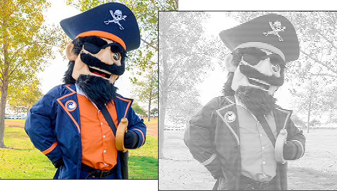

Using reinterpret_cast
The function stbi_load() always returns a pointer to the first byte of the digital image in memory, not the first pixel. That makes some code more complex than it needs to be. However, if you like, you can process your images pixel-by-pixel instead of byte-by-byte by following these instructions:
- Create a Pixel structure type with 3 unsigned char data members (since our image only uses 3 channels).
- When creating your beg pointer, change it to a Pixel*, not an unsigned char *, and then use reinterpret_cast<Pixel*> to cause beg to look at your image data pixel-by-pixel.
- When creating your end pointer, use beg as the base pointer. You no longer need to use channels as part of the calculation.
Here's a horizontal-stripes filter that does this, using nested for loops instead of an iterator loop, to change all the pixels in each odd numbered row to white stripe.
struct Pixel { unsigned char red, green, blue; };
Pixel * beg = reinterpret_cast<Pixel*>(pete);
Pixel * end = beg + width * height;
for (int y = 0; y < height; ++y)
{
for (int x = 0; x < width; ++x, ++beg)
{
if (y % 2 == 1) { // odd rows
*beg = Pixel{255, 255, 255};
}
}
}Here's what the horizontal-stripes filter looks like when it runs:

 This course content is offered under a
CC
Attribution Non-Commercial license. Content in this course
can be considered under this license unless otherwise noted.
This course content is offered under a
CC
Attribution Non-Commercial license. Content in this course
can be considered under this license unless otherwise noted.